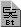

| .NET Refnum—Use this refnum to launch the Select .NET Constructor dialog box and select an assembly in the Global Assembly Cache (GAC) or navigate to a private assembly. |
| Application Refnum—Used with the VI Server. Use this refnum control when you open a reference to a LabVIEW application and you want to pass the reference as a parameter to another VI. By passing this refnum to the VI Server, you can control the behavior and read properties of the application.
You can right-click an application refnum control and select Select VI Server Class from the shortcut menu to change the data type of the control—an application, a VI, a control or indicator, or a strictly typed VI.
You can drag any control and drop it on an application refnum to specify the type of control to which it refers. |
| Automation Refnum—Used with the ActiveX functions. Use this type of refnum when you open a reference to an ActiveX Server Object and you want to pass it as a parameter to another VI. To specify the type of the refnum, right-click it and select Select ActiveX Class»Browse from the shortcut menu to display the Select Object From Type Library dialog box and browse the list of available ActiveX Server applications. |
|  | Bluetooth Network Connection Refnum—Used with the Bluetooth VIs and functions. Use this type of refnum to open a connection to a Bluetooth device. |
 | Byte Stream File Refnum—Used with text or binary byte stream files. Use this type of refnum when you open or create a file in one VI but want to perform I/O operations on the file in another VI. You must have a refnum control on the front panel of the VI that performs I/O operations and a refnum indicator on the front panel of the VI that opens or creates the file. |
| Control Refnum—Used with the VI Server. Use this refnum control when you open a reference to a front panel control or indicator and you want to pass the reference as a parameter to another VI. By passing this refnum to the VI Server, you can control the behavior and properties of the control.
You can right-click a control refnum control and select Select VI Server Class from the shortcut menu to specify the data type of the control—an application, a VI, a control or indicator, or a strictly typed VI.
Right-click a control refnum control on the front panel and select Show Icon from the shortcut menu to view the refnum as an icon. Right-click the refnum on the front panel and select Show Control on the shortcut menu to view the refnum as a control. Note that the control is for display only.
You can drag any control and drop it on a control refnum to specify the type of control to which it refers. |
| Data Log File Refnum—Used with datalog files. Because datalog files have an inherent structure, the Data Log File Refnum passes the refnum and a description of the file type to and from calling VIs. Place a control inside the refnum to define the structure of the file. For a file that contains numbers, create a datalog refnum that contains a number. If each record in the file contains a pair of numbers, place a cluster inside the refnum and place two numeric controls inside the cluster.
You can drag any control and drop it on a data log file refnum to specify the data type of the datalog file. |
| DataSocket Refnum—Used with DataSocket functions. Use this type of refnum when you want to open a reference to a data connection and you want to pass it as a parameter to another VI. To specify the type of the refnum, right-click it and select Select DataSocket Class from the shortcut menu to browse to the DataSocket class. |
| Event Callback Refnum—Use this refnum to unregister or re-register the event callback. You also can use this refnum to pass the event callback registration to a subVI. |
| IrDA Network Connection Refnum—Used with the IrDA functions. Use this type of refnum when you want to open a connection to an IrDA device. |
| Menu Refnum—Used with the Menu functions. Use this type of refnum when you want to pass a VI menu reference to a subVI. |
| Occurrence Refnum—Used with the Occurrence functions. Use this type of refnum when you generate an occurrence in one VI but want to set or wait for the occurrence in another VI. |
| TCP Network Connection Refnum—Used with the TCP VIs and functions. Use this type of refnum when you open a network connection in one VI but want to perform I/O operations on the network connection in another VI. |
| UDP Network Connection Refnum—Used with the UDP VI and functions. Use this type of refnum when you want to uniquely identify a UDP socket. You can pass the UDP socket reference to a subVI so the subVI can use the socket. |
| VI Refnum—Used with the VI Server. Use this refnum control when you open a reference to a VI and you want to pass the reference as a parameter to another VI. By passing this refnum to the VI Server, you can control the behavior and properties of the VI.
Use VI refnum controls to pass a VI refnum from one VI to another. The Open VI Reference function requires a strictly typed VI refnum control as a type specifier input when you want a strictly typed reference to a VI. In this case, the value of the refnum control is unimportant. The function uses only the type.
You can drag any control and drop it on a VI refnum to specify the type of control to which it refers. |